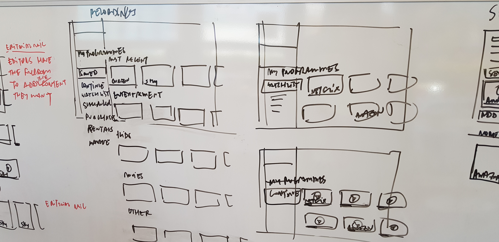
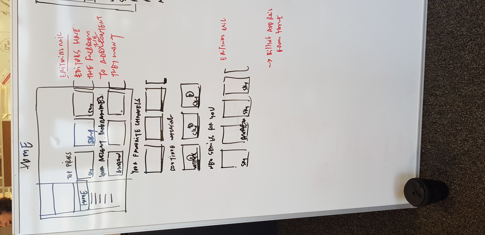
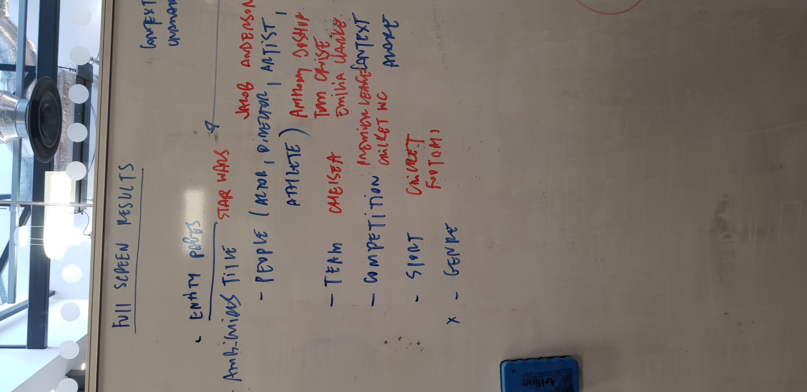
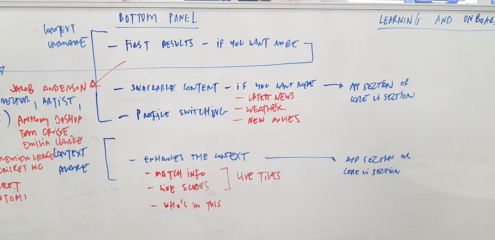
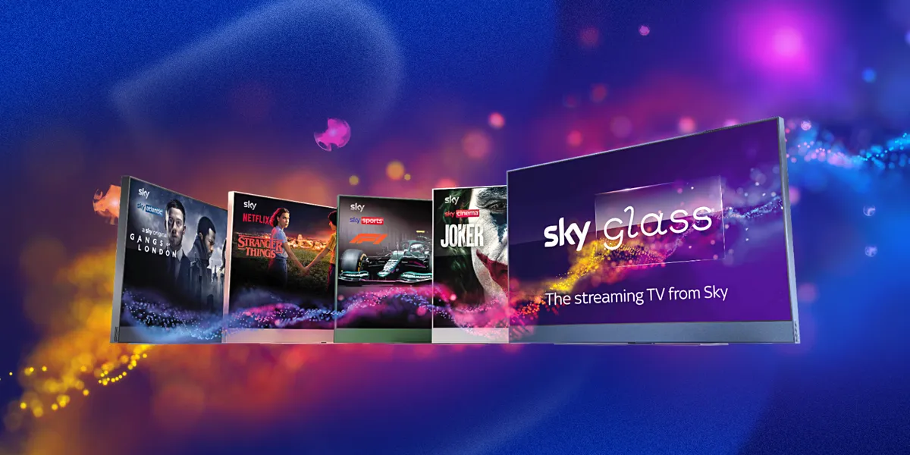
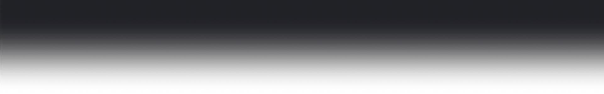

The Context
Building a new kind of TV, from a blank page
Sky had built its business on satellite. Every product, every interface, every interaction had grown up around a dish on the side of the house. Sky Glass changed all of that. It was Sky's first streaming-only TV: no dish, no box, just a screen with everything built in. And at the start of this project, none of it existed.
I joined the team at the very beginning, when the project was a small, top-secret group of around six people asking a fundamental question: what should Sky's first streaming TV look, feel and behave like? Not just the software, but the hardware, the interaction model, the visual language, the motion design, and the principles that would hold it all together.
Concepting began in 2018, more than three years before the product went public. The core team was tight, the brief was open, and the ambition was enormous. This was the concepting phase alone — before the wider design team came on board and scaled the work toward launch.
"We weren't redesigning Sky. We were reimagining what Sky could be when freed from every constraint that satellite had ever imposed."
Day one
These are the whiteboard sessions from the very first weeks. The navigation structure, the tile hierarchy, the editorial model, the homepage architecture. None of it existed before these walls.




Whiteboard sessions, April and June 2019. The foundations of Sky Glass.

Sky Glass launched in five colourways. October 2021.
My Role
How I contributed
I was embedded in the core design team from day one, responsible for shaping the foundational interaction model and visual language of the product. As the programme grew, my role expanded to onboarding the wider design team and directing the brand expression of the interface across marketing and advertising.
Lead Product Designer
- Created the interaction principles that governed how tiles, rails and navigation worked across the entire interface, defining sizes, motion behaviour and UX logic from scratch
- Designed the Switcher (the contextual overlay for navigating between channels and content) and the Glance (the full-screen takeover for immersive content browsing)
- Worked with engineering on Sky's far-field voice control, state-of-the-art technology that allowed customers to control their TV from across the room without a remote
- Onboarded and directed the wider design team as the programme scaled, providing finalised direction on interface patterns and brand expression so new team members could contribute without breaking consistency
- Worked daily with the in-house marketing and advertising agency, directing and stress-testing brand elements for the TV interface and providing final sign-off on visual treatment
- Explored cinemagraphs and advanced visual treatments as the design matured, contributing to the design system that would underpin the entire product
- Named as patent holder for the UI design of Sky Glass
The Journey
From first principles to finished product
The project moved through several distinct phases over two-plus years, each building on the last. What started as a small team asking open questions became a full-scale product programme that ultimately shipped to millions of homes.
2019
Concepting
Small core team. Open brief. What does Sky look like without a satellite dish? Building interaction principles, tile logic, motion rules and the foundational visual language from nothing.
2019 to 2020
Design maturity
Switcher, Glance, voice control, category rails and navigation patterns. The system taking shape. Design system built and documented. Team growing.
2020 to 2021
Scaling and shipping
A full year of getting the product across the line. Onboarding the wider design team, directing the in-house advertising agency, cinemagraphs, stress-testing, and final engineering handover. Everything it takes to ship.
October 2021
Launch
Sky Glass launches in the UK. Five colourways, three sizes, no satellite dish required. One of the most significant product launches in Sky's history.
The Interface
Interaction principles, built from scratch
One of the first and most important pieces of work was defining the interaction principles: the rules that would govern how every tile, rail, transition and state in the interface behaved. These principles weren't decorative, they were architectural. Every subsequent design decision had to be tested against them.
The interface was internally known as Entertainment OS, a name chosen deliberately to position it as a platform rather than a product. The ambition from early on was that this same system would eventually be white-labelled and syndicated to partners around the world under the name Mosaic, enabling each operator to brand the experience as their own while sharing the same foundational design language underneath.
Navigation was one of the most considered areas. Multiple directions were prototyped and evaluated against real user behaviour before the final model was committed to — from vertical navigation to top nav patterns — each tested to find the approach that felt most natural on a TV screen.
Vertical navigation concept
Top nav prototype
Navigation explorations: two of the directions prototyped and evaluated before the final interaction model was defined.
Tile sizes, motion curves, focus behaviour, scroll physics, rail structure, content hierarchy. Each element defined with enough rigour that the principles could be handed to an engineering team and a growing design team and keep producing consistent output.

Category rail design: non-content tiles for branded experiences.

In-page navigation: consistent positioning, UI and interactions across the Now/Next rail and TV Guide.
Key Features
The Switcher, the Glance and far-field voice
Two of the most technically and experientially complex features I worked on were the Switcher and the Glance. The Switcher allowed customers to move between channels and content with a directional swipe, maintaining context while surfacing related options. The Glance was the full-screen takeover: an immersive overlay that let customers browse content without leaving what they were watching.
Far-field voice was state-of-the-art technology. Sky Glass could hear you from across the room, hands-free, without needing to press anything. Designing the voice interface meant thinking about feedback, error states, confidence indicators and the visual language of a system that was listening before the customer had finished speaking.
Switcher to Glance
Switcher left and right
Far-field voice control: state-of-the-art hands-free interaction from across the room.

Launch
Sky's biggest product launch in a generation
Sky Glass launched in the United Kingdom in October 2021, followed by Ireland in 2022. It was positioned as Sky's most significant product launch in years: the company's first streaming-only TV and a direct challenge to the assumption that great TV required a satellite dish.
The marketing campaign that accompanied the launch was one of Sky's largest ever, spanning television, outdoor, digital and in-store. Sky invested heavily in communicating the simplicity of the proposition: all of Sky, in one screen, with no dish required. The campaign reached tens of millions of people across multiple channels and was backed by a marketing spend widely reported to be among Sky's most significant in recent history.
October 2021
Sky Glass launches in the United Kingdom. Available in five colourways (Ocean Blue, Ceramic White, Racing Green, Anthracite Black and Dusky Pink) across three screen sizes (43", 55" and 65").
Ireland launch followed in 2022. The product has since been globally syndicated, with the underlying UI platform forming the basis for Sky's international streaming ambitions.
The product
No satellite dish. No set-top box. Everything integrated into the screen itself, powered by Sky's streaming platform and controlled by far-field voice, a touch remote, or the Sky Glass app.
Sky Glass went on to win multiple industry awards and established a new benchmark for streaming TV hardware in the UK market.
5
Colourways at launch, the first time Sky had offered a consumer TV in multiple colours
2+
Years of top-secret design and development from initial concept to public launch
1
Patent for the UI design, the first of its kind for a Sky streaming TV product
European Expansion
From the UK to Europe and beyond
The UK launch was just the beginning. Sky Glass and the Entertainment OS platform beneath it were designed from the outset to travel. The interaction language, the design system, the component library — all of it had been built with internationalisation in mind, because from day one the ambition was always global.
Following the successful UK launch, the platform expanded across Sky's European markets. Sky Italia brought Entertainment OS to Italy. Sky Deutschland rolled it out across Germany and Austria. Each territory brought localisation challenges — language, content catalogues, editorial priorities — but because the design system had been built with this scale in mind, the foundational UI could flex without breaking.
October 2021
United Kingdom
Sky Glass launches. First streaming-only Sky TV. No satellite dish. Five colourways, three sizes. One of Sky's most significant product launches.
2022
Ireland
Entertainment OS expands to Ireland. The platform proves its ability to adapt to a new market without a redesign — exactly what the design system was built for.
2022 to 2023
Italy and Germany
Sky Italia and Sky Deutschland adopt the Entertainment OS platform, bringing the interface to tens of millions of European homes across two additional major markets.
Global Scale
A design system that serves the world
As the platform grew from one market to many, so did the design operation that supported it. What began as a small team in London grew into a global programme split across two continents, with design teams operating out of Sky's headquarters in Osterley, UK and Comcast's base in Philadelphia, USA.
The design system became the connective tissue of the entire operation. Every component, every pattern, every motion principle had to work for Sky Glass in the UK, for Hubbl in Australia, for Xumo in the United States, and for Rogers in Canada — each with their own branding, content catalogues and technical constraints, but all sharing the same foundational EntOS UI underneath.
"The design system wasn't just a library of components. It was the infrastructure that allowed one design language to power dozens of products across multiple continents simultaneously."
Involvement timeline
2018 to 2019
Core concepting
Team of 6. Top-secret project. Interaction principles, tile logic, navigation model, motion language. Building the foundations of what would become Sky Glass from the ground up — more than three years before launch.
2019 to 2020
Feature design
Switcher, Glance, far-field voice, category rails, TV Guide, entity pages. Design system built and documented. Far-field voice — state-of-the-art technology — requiring new interaction patterns from scratch.
2020 to 2021
Scaling and launch
Onboarding the wider design team. Directing the in-house advertising agency on brand expression for the TV interface. Cinemagraphs and visual finesse. Final preparation for launch. Sky Glass goes on sale in the UK, October 2021.
2022 to 2023
European rollout
Entertainment OS expands to Ireland, Italy and Germany. The design system scales across Sky's European territories. Each market localised but all running the same foundational design language built in 2019.
2023 to 2024
Global syndication
Entertainment OS reaches North America and Australia. Xumo (Comcast's streaming TV brand) in the US, Hubbl (Foxtel's streaming TV, Australia), Rogers in Canada. The platform that began as Sky Glass is now a global TV operating system. Design team split across Philadelphia and the UK.
2025 to 2026
Entertainment OS at scale
Sky Glass TV and Sky Glass Stream (the streaming stick) both running Entertainment OS. Multiple active products, multiple territories, one design language. The system built in those first whiteboard sessions is now running in living rooms across the UK, Ireland, Italy, Germany, Australia, the US and Canada.
Global reach
One platform. Many products.
Entertainment OS now powers a family of products that spans continents. Sky Glass TV and Sky Glass Stream in the UK and Europe. Hubbl (Foxtel) in Australia. Xumo TV and the Xumo Stream Box in the United States via Comcast and retail partners including Hisense, Element and Best Buy. Charter in the US. MultiChoice in South Africa. All of them running the same interaction language, the same component library, the same design system that began on a whiteboard in 2019.
Managing that at scale required a design operation to match. At its peak, the Entertainment OS design programme ran teams across Osterley in London and Comcast's headquarters in Philadelphia, with designers, product managers, engineers and brand specialists working across time zones to keep the system coherent as it expanded into new markets and new products.
A key part of that operation was the theme builder — a Figma-based design tool built in-house that allowed each syndication partner to brand their version of Entertainment OS within controlled guardrails. Partners could define their colour palettes, logos and brand expressions without breaking the underlying system. This meant Sky's design team could manage global brand consistency at scale, with a large team coordinating partner outputs from both Philadelphia and the UK.

Entertainment OS operator structure: the full hierarchy of operators, territories, retailers and device types the platform serves globally.
6+
Global operators: Sky, Foxtel, MultiChoice, Charter, Comcast (Xfinity) and Xumo TV
8+
Territories: UK, Ireland, Italy, Germany, Austria, Australia, South Africa and USA
2
Design hubs running in parallel: Osterley, London and Philadelphia, USA
Sky
UK · Ireland · Italy · Germany · Austria
Glass TV · Glass Stream · Sky Live
Foxtel · MultiChoice
Australia · South Africa
Hubbl · Stream Puck
Comcast · Charter · Xumo
USA
Xumo TV · Xumo Stream Box · Hisense · Element · Best Buy
Reflection
What it meant to build from nothing
Most design work starts with something to push against: an existing product, a set of patterns, a brand system, a technical constraint that is already well understood. Sky Glass started with almost none of that. The product didn't exist. The interaction model didn't exist. The design team was a handful of people in a room with a blank screen and a question.
What that required was a different kind of thinking. Not iteration, but invention. Not refinement, but foundation-laying. Every decision made in those early months would eventually be multiplied across every screen, every feature, every market the product entered. Getting the principles right from the start was the entire job.
Sky Glass is still live, still using the interaction language we built, still selling in the UK, and still carrying a UI that bears my name on the patent. That's the measure of whether foundational design work holds up. This one did.